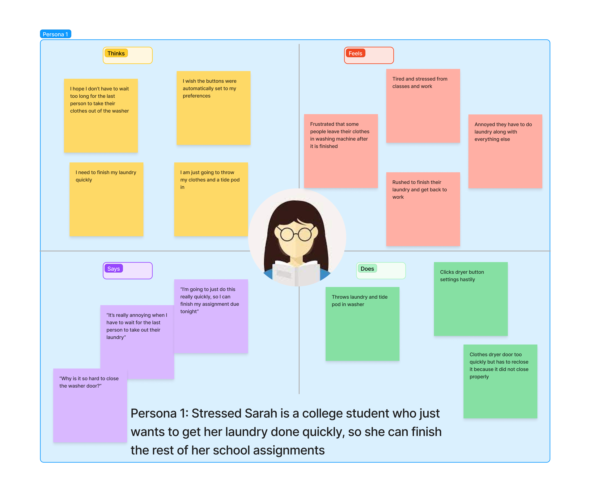

There is a handle that juts out, so the user knew to pull the door open and place clothes inside. There is also a hand-shaped slit in the detergent tray, so other users started there because they knew to pull the tray out to place detergent inside
What buttons and settings do you expect to see when doing laundry?
Users expect to see an on/start button, an indication that the washer has started, settings for speed, types of clothing (i.e. brights and delicates), and temperature
Is it easy to understand what each button does?
Users thought it was easy to understand what each button does, except for the “soil” setting, and there were symbols next to each button that helped indicate what each setting did
Though, most users indicated they usually use the same options for each setting each time
Is it easy to understand how to start the machine?
Users found starting the machine intuitive because there was a different colored button for start and a message displayed on the small screen that directed the user to press “start”
The washing machine interface tries to solve the problem of cleaning clothes in an easy way, with various options depending on the type of clothes a person is cleaning. The key components include a handle that allows a person to open the washer and place their clothes inside, a tray that pulls out so someone can fill it with detergent and fabric softener, a screen that displays the time left, and three options for each setting of the wash, i.e. type of cycle and temperature.
Observations
User One
Hesitated a bit when selecting the option for the “soil” setting
Pulled door open with handle and put clothes
Placed tide pod inside before clothes
Pushed setting buttons quickly
User Two
Waited until the door lock light appeared to leave the washing machine
Pulled the detergent tray open by the handle slit and poured detergent into it
Checked the default options, indicated by a green light, for the settings and clicked start
Hesitated when selecting the option for the “soil” setting
User Three
Pulled door open with handle and put clothes and a tide pod inside
Pressed different options for each of the settings before clicking “start”
Struggled a bit when closing the washing machine door because they were in a rush and had to reclose the door properly
Placed tide pod inside after placing clothing inside
Personas
Persona One

Persona One faces a problem with how long it can take to interact with the washing machine. She struggles with closing the washer door quickly enough, pressing all of the different buttons for each washer setting, and waiting for others to use the interface. This persona represents the impatience I saw in many users using the washing machine. People were typically in a rush and wanted to wash their clothes as fast as possible. Thus, Sarah represents that she struggles with using the interface quickly enough because she has to use it at a fast pace.
Persona Two
Persona Two faces a problem navigating all of the different features the washer has. The user is not sure what option to use for the “soil” setting and is overwhelmed when figuring out which option is best for her load. Consequently, she ends up using the same options each time and does not make the best use of the interface. This persona represents the confusion I saw in some users who hesitated when selecting certain options and followed a set routine, instead of looking at their other washer options.